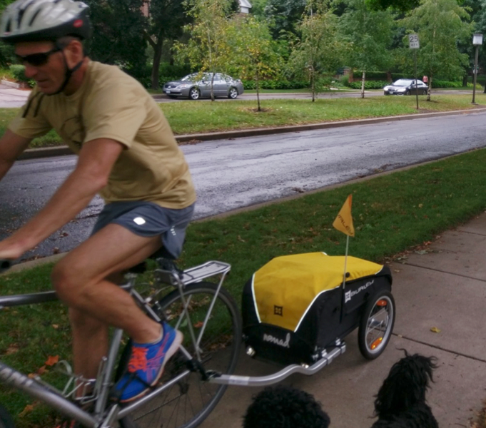

March 27, 2018
Go Ride a Bike

Automobiles are a major cause of air pollution and contribute to climate change. Hybrid and electric vehicles, while better, still have a significant carbon footprint (unless you use your own solar to power your EV – now that’s green!). If you care about the climate, try walking or bicycling as an alternative way to get around. It’s easier in some places than others, but Finley’s uncle Marc has been a regular bicycle commuter for years in Milwaukee and Minneapolis, so it can be done. Here are a few hints:
- Make sure you have good equipment. A rack on the back can be used to hold panniers, which can carry your work clothes and lunch. For more hauling, there are a variety of great carts you can attach to the rear; most will hold a week’s worth of groceries.
- For cold weather, layers are important. Pogies are fleece-lined windproof mitts that sit over the handlebars. Slip your hands in and they’ll stay nice and warm.
- See if your school or workplace offers incentives. If you have to pay for car parking, cycling can save you money. If they don’t have bike racks or lockers, ask about having them installed.
- Invite others to join you – it’s more fun and motivating to cycle with friends. And you’ll be spreading Finley’s Green Leap message!
You can find more tips here.